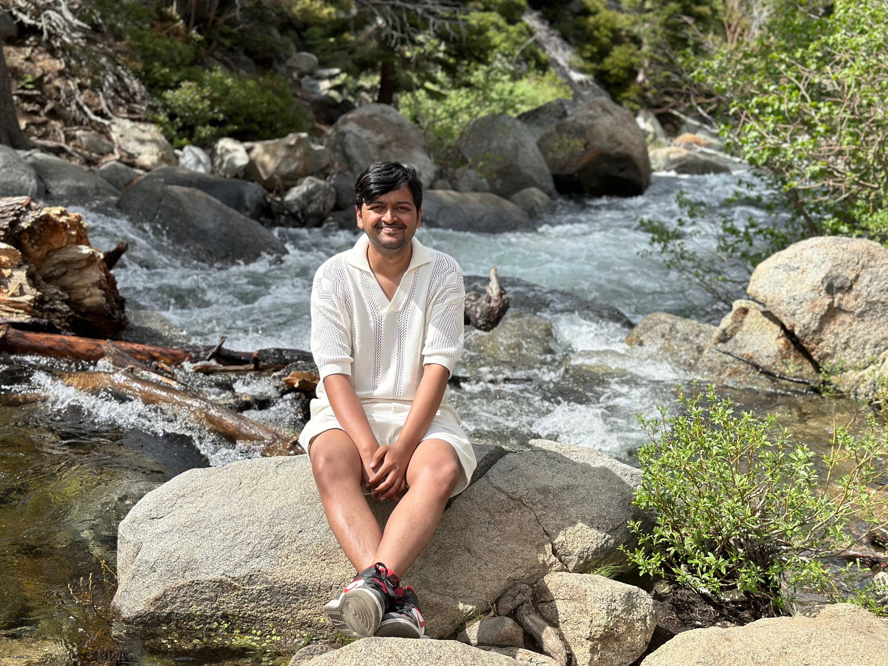
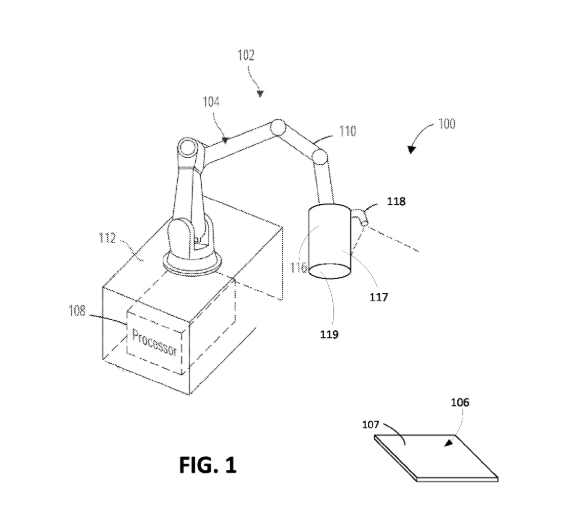
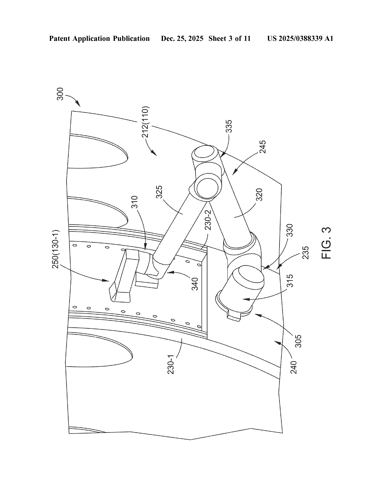
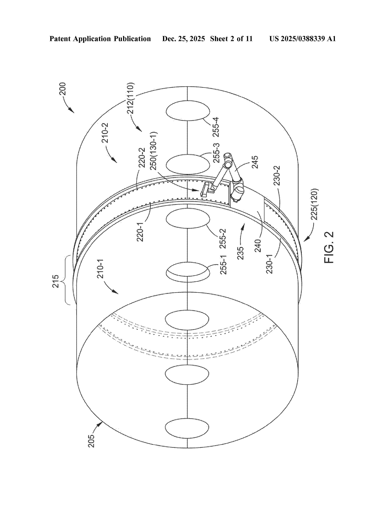

I am a second-year PhD student in Robotics Engineering at Worcester Polytechnic Institute, advised by Prof. Constantinos Chamzas and part of the ELPIS Lab. My research focuses on learning representations for Robot Task and Motion Planning.
In another lifetime, I worked with Eugen Solowjow's team at Siemens in Berkeley, California, conducting research on industrial manipulation and manufacturing. Our work involved transitioning technologies from TRL Level 3 to TRL Level 7, supported by the ARM Institute via the Department of Defense and NIST. I contributed to projects including tactile manipulation for defect detection of aircrafts (in collaboration with Boeing, CMU and Gelsight) and textile manipulation (in collaboration with Levi's and Bluewater Defense).
Under Review
, Constantinos Chamzas
ACM Hybrid Systems: Computation and Control (HSCC) 2025
Jeel Chatrola*,
,
Kevin Leahy,
Constantinos Chamzas
* Equal contribution
2025 IEEE International Conference on Automation Science and Engineering (CASE)
*,
Gokul Narayanan*,
Jonathan Zornow,
Carlos Calle,
Auralis Herrero Lugo,
Jose Luis Susa Rincon,
Chengtao Wen,
Eugen Solowjow
* Equal contribution
Collaborators: Levi's, BlueWater
Defense, Sewbo
2023 IEEE/RSJ International Conference on Intelligent Robots and Systems (IROS)
Arpit Agarwal,
,
Chengtao Wen,
Veniamin Stryzheus,
Brian Miller,
Matthew Chen,
Micah K Johnson,
Jose Luis Susa Rincon,
Justinian Rosca,
Wenzhen Yuan
Collaborators: Carnegie Mellon
University (CMU), Boeing, Gelsight

Patent No: WO2024181994A1 • Published: September 6, 2024 • Filed: August 29, 2023
Assignee: Siemens Corporation • Authority: WIPO (PCT)
Inventors: Chengtao Wen, Justinian Rosca, Eugen Solowjow, Gokul Narayanan Sathya Narayanan, Jose Luis Susa Rincon,

Patent No: US20250388339A1 • Published: December 25, 2025 • Filed: June 25, 2024
Assignee: Siemens Corporation, Boeing Co. • Authority: United States
Inventors: Veniamin V. Stryzheus, Brian T. Miller, Matthew J. Chen, Micah K. Johnson, , Chengtao Wen, Jose Luis Susa Rincon, Justinian Rosca
A method of inspection of a surface of an aerodynamic structure using image sensors and tactile sensors to identify and characterize defects with corresponding location and dimensioning information.

Patent No: US20250388337A1 • Published: December 25, 2025 • Filed: June 25, 2024
Assignee: Siemens Corporation, Boeing Co., Carnegie Mellon University • Authority: United States
Inventors: Veniamin V. Stryzheus, Veniamin Tereshchuk, Arpit Agarwal, Wenzhen Yuan, Micah K. Johnson, , Chengtao Wen, Justinian Rosca
A system for inspection of aerodynamic surfaces using vehicle-mounted image and tactile sensors on a track to identify and dimension predicted defects.